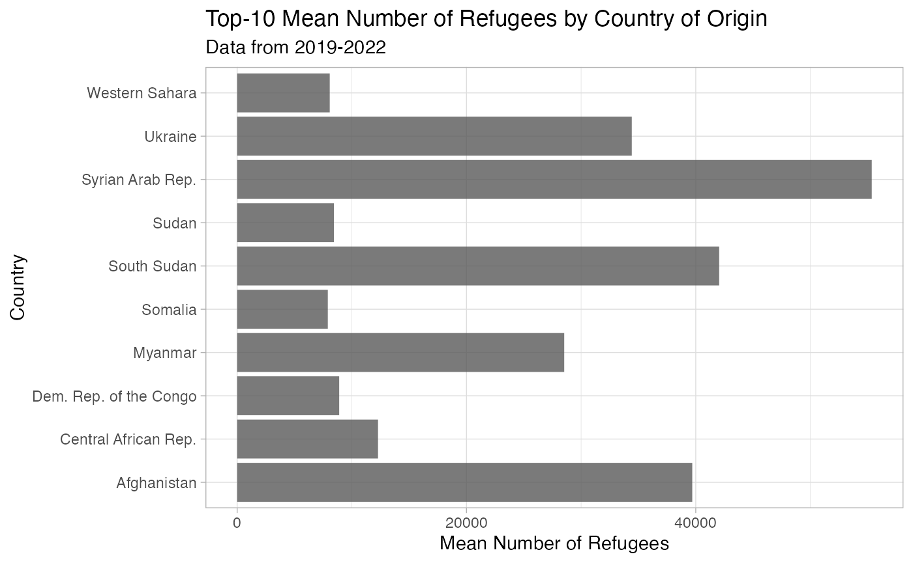
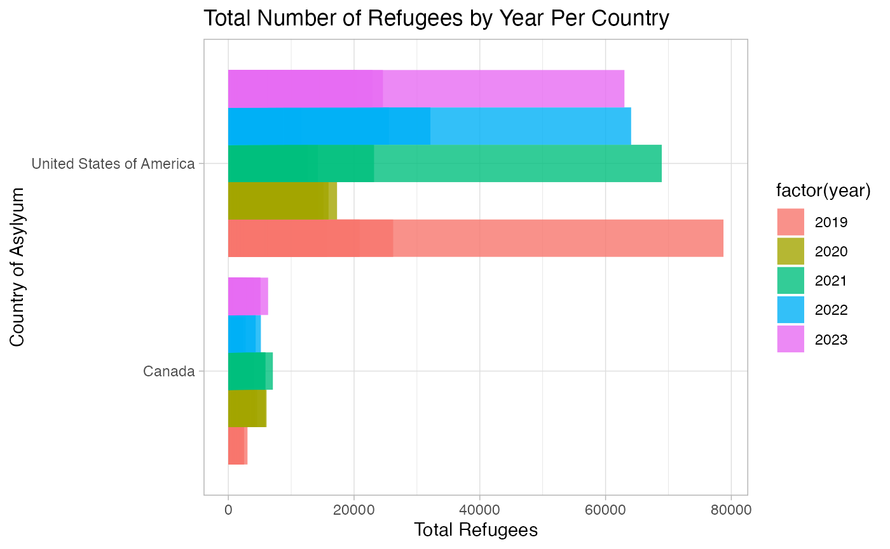
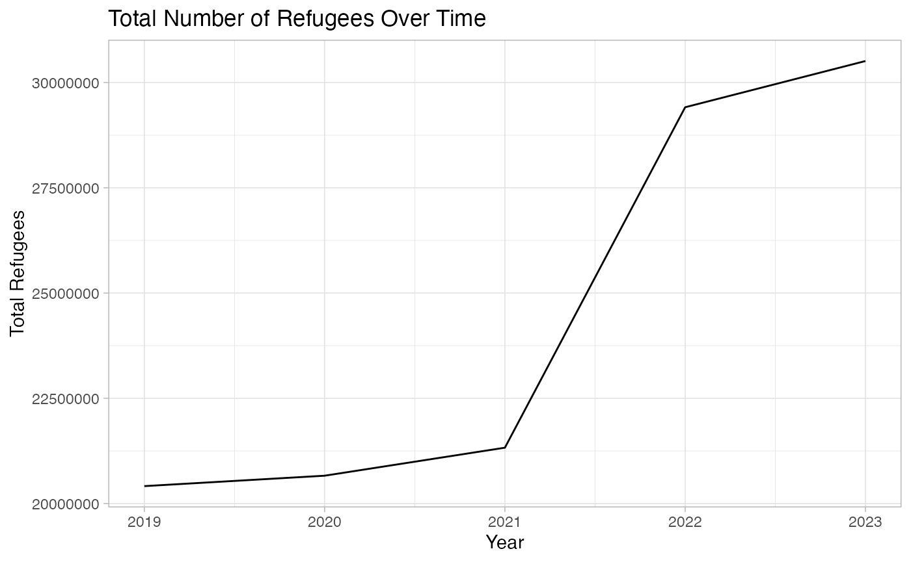

Example
example.RmdRefugee Population Data from TidyTuesday
R Package, Project2, includes basic functions to calculate cosine, sine, sample mean, sample standard deviation, 95% confidence interval of the mean, and S3 class 95% confidence interval. In order to utilize these functions from the Project2 package, one must create a vector and label it “x”.
Question: What is the 95% confidence interval and mean number of refugees across the US & Canada from 2019 to 2022?
## Data is from TidyTuesday and focuses on refugee population and country of asylum data.
library(tidyverse)
#> ── Attaching core tidyverse packages ──────────────────────── tidyverse 2.0.0 ──
#> ✔ forcats 1.0.0 ✔ stringr 1.5.1
#> ✔ readr 2.1.4 ✔ tibble 3.2.1
#> ── Conflicts ────────────────────────────────────────── tidyverse_conflicts() ──
#> ✖ dplyr::filter() masks stats::filter()
#> ✖ dplyr::lag() masks stats::lag()
#> ℹ Use the conflicted package (<http://conflicted.r-lib.org/>) to force all conflicts to become errors
library(refugees)
#>
#> Attaching package: 'refugees'
#>
#> The following object is masked from 'package:tidyr':
#>
#> population
populations <- refugees::population
populations <- filter(populations, year >= 2019)
head(populations)
#> # A tibble: 6 × 16
#> year coo_name coo coo_iso coa_name coa coa_iso refugees asylum_seekers
#> <dbl> <chr> <chr> <chr> <chr> <chr> <chr> <dbl> <dbl>
#> 1 2019 Afghanistan AFG AFG Afghani… AFG AFG 0 0
#> 2 2019 Benin BEN BEN Afghani… AFG AFG 0 5
#> 3 2019 Iran (Isla… IRN IRN Afghani… AFG AFG 36 25
#> 4 2019 Pakistan PAK PAK Afghani… AFG AFG 72191 138
#> 5 2019 Türkiye TUR TUR Afghani… AFG AFG 0 79
#> 6 2019 Algeria ALG DZA Albania ALB ALB 0 0
#> # ℹ 7 more variables: returned_refugees <dbl>, idps <dbl>, returned_idps <dbl>,
#> # stateless <dbl>, ooc <dbl>, oip <dbl>, hst <dbl>
population.csv
| variable | class | description |
|---|---|---|
| year | double | The year. |
| coo_name | character | Country of origin name. |
| coo | character | Country of origin UNHCR code. |
| coo_iso | character | Country of origin ISO code. |
| coa_name | character | Country of asylum name. |
| coa | character | Country of asylum UNHCR code. |
| coa_iso | character | Country of asylum ISO code. |
| refugees | double | The number of refugees. |
| asylum_seekers | double | The number of asylum-seekers. |
| returned_refugees | double | The number of returned refugees. |
| idps | double | The number of internally displaced persons. |
| returned_idps | double | The number of returned internally displaced persons. |
| stateless | double | The number of stateless persons. |
| ooc | double | The number of others of concern to UNHCR. |
| oip | double | The number of other people in need of international protection. |
| hst | double | The number of host community members. |
summary <- populations %>%
group_by(coo_name) %>%
summarise(Sample_Mean = mean(refugees, na.rm = TRUE))
top_countries_mean <- summary %>%
arrange(desc(Sample_Mean)) %>%
head(10)
top_countries_mean
#> # A tibble: 10 × 2
#> coo_name Sample_Mean
#> <chr> <dbl>
#> 1 Syrian Arab Rep. 55348.
#> 2 South Sudan 42041.
#> 3 Afghanistan 39694.
#> 4 Ukraine 34419.
#> 5 Myanmar 28527.
#> 6 Central African Rep. 12286.
#> 7 Dem. Rep. of the Congo 8900.
#> 8 Sudan 8440.
#> 9 Western Sahara 8075.
#> 10 Somalia 7907.Top-10 Mean Number of Refugees by Country of Origin
plot <- ggplot(top_countries_mean, aes(x = coo_name, y = Sample_Mean)) +
geom_bar(stat = "identity", position = "dodge", alpha = 0.8) +
labs(
title = "Top-10 Mean Number of Refugees by Country of Origin",
subtitle = "Data from 2019-2022",
x = "Country",
y = "Mean Number of Refugees",
fill = "Year"
) +
theme_light() +
coord_flip() +
facet_grid()
plot
Comparing refugees seeking asylym in the US & Canada
subset <- populations %>%
filter(coa_name == c("United States of America", "Canada"))
#> Warning: There was 1 warning in `filter()`.
#> ℹ In argument: `coa_name == c("United States of America", "Canada")`.
#> Caused by warning in `coa_name == c("United States of America", "Canada")`:
#> ! longer object length is not a multiple of shorter object length
ggplot(subset, aes(x = coa_name, y = refugees, fill=factor(year))) +
geom_bar(stat = "identity", position = "dodge", alpha = 0.8) +
labs(
title = "Total Number of Refugees by Year Per Country",
x = "Country of Asylyum",
y = "Total Refugees") +
theme_light() +
coord_flip() +
facet_grid()
Time series plot of total refugees by year
# Aggregate the total number of refugees by year
total_refugees_by_year <- populations %>%
group_by(year) %>%
summarise(Total_Refugees = sum(refugees, na.rm = TRUE)) %>%
ungroup()
# Create a time series plot of total refugees by year
ggplot(total_refugees_by_year, aes(x = year, y = Total_Refugees)) +
geom_line() +
labs(
title = "Total Number of Refugees Over Time",
x = "Year",
y = "Total Refugees") +
theme_light() +
facet_grid()
#$ Calculate mean refugees for each year
mean_refugees_by_year <- populations %>%
group_by(year) %>%
summarise(mean_refugees = mean(refugees, na.rm = TRUE))
## Extract a vector of mean refugees for each year
mean_refugees_vector <- map_dbl(unique(populations$year), ~ mean_refugees_by_year$mean_refugees[mean_refugees_by_year$year == .x])
## Mean refugees for each year
mean_refugees_vector
#> [1] 3753.386 3762.857 3817.305 4960.039 5150.343
## Calculate the overall mean of refugees
overall_mean_refugees <- mean(populations$refugees, na.rm = TRUE)
## Subtract the overall mean from each yearly mean using map2()
results <- map2(mean_refugees_by_year$mean_refugees, overall_mean_refugees, `-`)
## Difference between refugee mean per year and overall mean
results
#> [[1]]
#> [1] -558.3215
#>
#> [[2]]
#> [1] -548.8513
#>
#> [[3]]
#> [1] -494.4026
#>
#> [[4]]
#> [1] 648.3314
#>
#> [[5]]
#> [1] 838.6352
## Calculating sample mean and standard deviation in order to calculate the 95% confidence interval
## x = Vector of your choosing made of any combination of numerical values. In this case, it's the winner's marathon times.
x <- (population$refugees)
## Calculate the sample mean or average of values in the vector x
sample_mean(x)
#> [1] 5556.693
## Calculate the sample standard deviation
sample_sd(x)
#> [1] 67117.25
## Calculate the confidence interval of the mean with consideration to marginal errors. Function produces the lower and upper bound of the mean.
CI1(x)
#> [1] 5186.481 5926.905
## S3 class to produce a 95% confidence interval with lower and upper bounds.
## Used in order to track the function as rnorm produces values at random using the mean and standard deviation from the winning marathon times in hours
## Produces n values at random with a normal distribution to account for all data points in the winners dataset
set.seed(111)
x <- rnorm(n = nrow(population), mean = mean(population$refugees), sd = sd(population$refugees))
## Constructor function of the confidence interval S3 class
## Prints each of the returns of the make_ci_class along with the respective value
obj <- make_ci_class(x)
print(obj)
#> ci_class object with observations
# Modified confidence interval calculation with consideration to the S3 confidence interval class
CI2(obj)
#> [1] 5061.899 5803.059Packages & Functions
-
dplyr:summarise(),mean(),filter(),arrange(),group_by() -
purr:map_dbl(),map2() -
tidyr:tibble(),count(),filter(),arrange(),group_by() -
ggplot2:geom_bar(),geom_line(), `geom_point(),geom_point(),facet_grid()